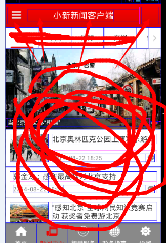

android之代码优化（base类）
在对于开发之中，大多数公司会有自己的成熟框架，你只要按照规则去熟悉，去使用就行了，而对于开发人员来说，去了解一些代码优化有助于自己的代码开发。
而在于框架之中第一个原则：对于多次出现并且有共同点的地方必须抽取出来作为base类
我作为一个小小菜鸟用一个实例帮助自己理解 写下自己的理解 （新闻开发）
第一个 对于Fragment中 有时候开发项目中，你会多次创立界面，和引入数据
package com.example.qianlong.base;
import com.example.qianlong.MainActivity;
import com.jeremyfeinstein.slidingmenu.lib.SlidingMenu;
import android.content.Context;
import android.os.Bundle;
import android.support.v4.app.Fragment;
import android.view.LayoutInflater;
import android.view.View;
import android.view.View.OnClickListener;
import android.view.ViewGroup;
public abstract class BaseFragment extends Fragment implements OnClickListener {
protected Context ct;
protected SlidingMenu sm;
public View rootView;
@Override
public void onCreate(Bundle savedInstanceState) {
super.onCreate(savedInstanceState);
/* Android 新特性的fragment,在其中怎么通过按钮跳转到其他与之无关的activity啊。
在fragment中可以getActivity(),用这个就可以了*/
//自己的想法就是将getactivity引用传给CT 也就是context就可以调用其他Fragment
ct = getActivity();
}
@Override
public View onCreateView(LayoutInflater inflater, ViewGroup container,
Bundle savedInstanceState) {
//在creatview中 初始化view initview 然后将界面返回
rootView = initView(inflater);
return rootView;
}
/* (non-Javadoc)
* 在activit创建时调用的方法
*/
@Override
public void onActivityCreated(Bundle savedInstanceState) {
super.onActivityCreated(savedInstanceState);
// Fragment中有一个getActivity()的方法。这个方法会返回当前Fragment所附加的Activity
//获取所附加的activity得到slidingmenu
sm = ((MainActivity)getActivity()).getSlidingMenu();
//在activitiy初始化数据
initData(savedInstanceState);
}
public View getRootView(){
return rootView;
}
@Override
public void onClick(View arg0) {
}
protected abstract View initView(LayoutInflater inflater);
protected abstract void initData(Bundle savedInstanceState);
protected abstract void processClick(View v);
}
当然还有 viewpage 也可以优化 当主页面 标题栏没变的话 就可以直接在basepage里初始化 让子类去继承就可以了 唯一不同就是 中间内容 同时因为中间内容是需要判断有无网路 也可以设置进来

package com.example.qianlong.base;
import com.example.qianlong.MainActivity;
import com.example.qianlong.R;
import com.example.qianlong.utils.CommonUtil;
import com.example.qianlong.utils.CustomToast;
import com.jeremyfeinstein.slidingmenu.lib.SlidingMenu;
import com.lidroid.xutils.HttpUtils;
import com.lidroid.xutils.http.RequestParams;
import com.lidroid.xutils.http.callback.RequestCallBack;
import com.lidroid.xutils.http.client.HttpRequest;
import com.lidroid.xutils.util.LogUtils;
import com.lidroid.xutils.view.annotation.ViewInject;
import android.content.Context;
import android.os.Handler;
import android.view.LayoutInflater;
import android.view.View;
import android.view.View.OnClickListener;
import android.widget.Button;
import android.widget.ImageButton;
import android.widget.LinearLayout;
import android.widget.TextView;
import android.widget.Toast;
public abstract class BasePage implements OnClickListener {
protected Context ct;
protected View contentView;
protected Button leftBtn;
protected ImageButton rightBtn;
protected ImageButton leftImgBtn;
protected ImageButton rightImgBtn;
protected TextView titleTv;
protected SlidingMenu sm;
protected LinearLayout loadfailView;
public boolean isLoadSuccess=false;
public BasePage(Context context) {
ct = context;
contentView = initView((LayoutInflater) ct
//从服务中获得XML定义的view 传递给VIEW
.getSystemService(Context.LAYOUT_INFLATER_SERVICE));
//加载中组件
loadingView = contentView.findViewById(R.id.loading_view);
loadfailView = (LinearLayout) contentView
.findViewById(R.id.ll_load_fail);
//ct是否是主类的子类
if(ct instanceof MainActivity){
sm = ((MainActivity) ct).getSlidingMenu();
}
}
//初始化标题栏
protected void initTitleBar(View view) {
leftBtn = (Button) view.findViewById(R.id.btn_left);
rightBtn = (ImageButton) view.findViewById(R.id.btn_right);
leftImgBtn = (ImageButton) view.findViewById(R.id.imgbtn_left);
rightImgBtn = (ImageButton) view.findViewById(R.id.imgbtn_right);
leftImgBtn.setImageResource(R.drawable.img_menu);
titleTv = (TextView) view.findViewById(R.id.txt_title);
leftBtn.setVisibility(View.GONE);
rightBtn.setVisibility(View.GONE);
if(leftImgBtn!=null)
leftImgBtn.setOnClickListener(this);
}
public View getContentView() {
return contentView;
}
@ViewInject(R.id.loading_view)
protected View loadingView;
public void dismissLoadingView() {
if (loadingView != null)
loadingView.setVisibility(View.INVISIBLE);
}
protected abstract View initView(LayoutInflater inflater);
public abstract void initData();
protected abstract void processClick(View v);
public void onResume() {
}
public void showToast(String msg) {
showToast(msg, 0);
}
public void showToast(String msg, int time) {
CustomToast customToast = new CustomToast(ct, msg, time);
customToast.show();
}
protected void loadData(HttpRequest.HttpMethod method, String url,
RequestParams params, RequestCallBack<String> callback) {
HttpUtils http = new HttpUtils();
http.configCurrentHttpCacheExpiry(1000 * 1);
LogUtils.allowD = true;
if (params != null) {
if (params.getQueryStringParams() != null)
LogUtils.d(url + params.getQueryStringParams().toString());
} else {
params = new RequestParams();
}
//设备ID
// params.addHeader("x-deviceid", app.deviceId);
//渠道，统计用
// params.addHeader("x-channel", app.channel);
if (0 == CommonUtil.isNetworkAvailable(ct)) {
showToast("无网络，请检查网络连接！");
} else {
http.send(method, url, params, callback);
}
}
@Override
public void onClick(View v) {
switch (v.getId()) {
case R.id.imgbtn_left:
Handler handler = new Handler();
handler.postDelayed(new Runnable() {
@Override
public void run() {
sm.toggle();
}
}, 100);
break;
default:
break;
}
}
}